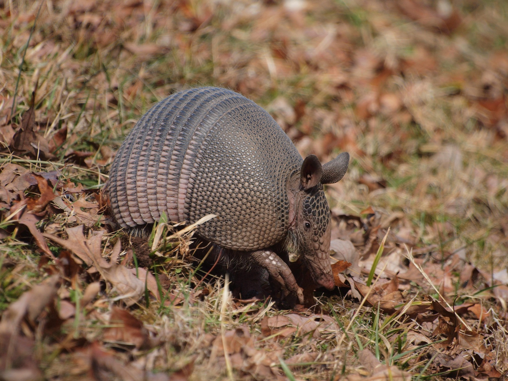

<html>
<head>
    <title>Menú Desplegable</title>
<body 
background="cas.jpg">
    <style>
          
    body { font-family: Arial, sans-serif; }
    
    .menu { margin: 0; padding: 0; list-style: none; }
    .menu li { float: left; position: relative; width: 150px; background-color: #333; }
    .menu li a { display: block; padding: 15px; color: white; text-decoration: none; text-align: center; }
    .menu li a:hover { background-color: #555; }

    .submenu { display: none; position: absolute; top: 100%; left: 0; margin: 0; padding: 0; list-style: none; }
    .submenu li { background-color: #444; width: 100%; }
    
    .menu li:hover > .submenu { display: block; }
 
    </style>
</head>
</html>
<body>

    <ul class="menu">
        <li><a href="#">Peces</a>
            <ul class="submenu">
                <li><a href="https://www.fishipedia.es/pez/betta-splendens">Pez Betta</a></li>
                <li><a href="https://www.fishipedia.es/pez/holacanthus-ciliaris">ángel reina</a></li>
                <li><a href="https://www.fishipedia.es/pez/hyphessobrycon-eques">Tetra serpae</a></li>
                <li><a href="https://www.tomscatch.com/es/especies-de-peces/marlin-blanco-11">Marlin Blanco</a></li>
                <li><a href="https://www.fishipedia.es/pez/hyphessobrycon-erythrostigma">Megalamphodus</a></li>
            </ul>
         </li>
        <li>
            <a href="#">Mamiferos</a>
            <ul class="submenu">
                <li><a href="gorila.html">Gorila</a></li>
                <li><a href="lemur.html">Lemur</a></li>
                <li><a href="caballo.html">Caballo</a></li>
                <li><a href="armadillo.html">Armadillo</a></li>
                <li><a href="reno.html">Reno</a></li>
            </ul>
        </li>
        <li><a href="#">Anfibios</a>
            <ul class="submenu">
                <li><a href="anfi2.html">Anfibios</a></li>
            </ul>
        </li>
        <li><a href="#">Aves</a>
            <ul class="submenu">
                <li><a href="https://www.nationalgeographicla.com/animales/loros">Loro</a></li>
                <li><a href="https://www.faunia.es/planea-tu-visita/animales/tucan-toco">Tucan Toco</a></li>
                <li><a href="https://deanimalia.com/selvaaguilafilipina.html">Águila Monera</a></li>
                <li><a href="https://aveschile.cl/picaflor-2/">Colibrí de Arica</a></li>
                <li><a href="https://laberintoenextincion.blogspot.com/2009/10/maca-tobiano.html">Macá Tobiano</a></li>
            </ul>
         </li>
         <li><a href="#">Reptiles</a>
        <ul class="submenu">
                <li><a href="coco.html">Cocodrilo De Agua Salada</a></li>
                <li><a href="torta.html">Tortuga gigante de galapagos</a></li>
                <li><a href="komodo.html">Dragon De Komodo</a></li>
                <li><a href="cama.html">Camaleon</a></li>
                <li><a href="ser.html">Serpiente De Cascabel</a></li>
            </ul>
         </li>
         <li><a href="index.html">Menu Principal</a>
         </li>
    </ul>

</body>
</html>
</head>
<html>
<body background="bosque.jpg" text="white">
<center><h2><marquee bgcolor="brown">EL ARMADILLO</marquee></h2></center>
<center><font face="calibri" color="red"><h3>(Dasypodidae)</h3></font></center>
<center></center>
<center><h3>El armadillo es un mamífero que vive principalmente en América, especialmente en México, Brasil, Argentina y otras zonas de Centro y Sudamérica. Habita en lugares como bosques, praderas, selvas y zonas con suelo suave, donde puede excavar madrigueras para vivir y protegerse.
Los armadillos suelen ser animales solitarios y pasan gran parte del tiempo buscando alimento. La mayoría son nocturnos, lo que significa que salen principalmente de noche. Durante el día descansan en sus madrigueras bajo tierra para evitar el calor y a los depredadores.
El armadillo es principalmente insectívoro, lo que significa que se alimenta sobre todo de insectos, larvas, hormigas, termitas y gusanos. También puede comer frutas, plantas pequeñas y algunos animales pequeños. Usa sus fuertes garras para cavar en la tierra y encontrar comida.</h3></center>

<center><h2>Características</h2></center>
<ol type="1" align="left">
<li>Tiene una armadura natural de placas duras que protege su cuerpo, su caparazón está formado por placas óseas cubiertas de piel dura</li>
<li>Posee garras fuertes que usa para cavar madrigueras y buscar alimento.</li>
<li>Tiene muy buen sentido del olfato para encontrar comida bajo la tierra.</li>
<li>Es un animal principalmente nocturno, activo durante la noche.</li>
<li>Son animales que ayudan al ecosistema porque controlan poblaciones de insectos.</li>
</ol>
</body>
</html>